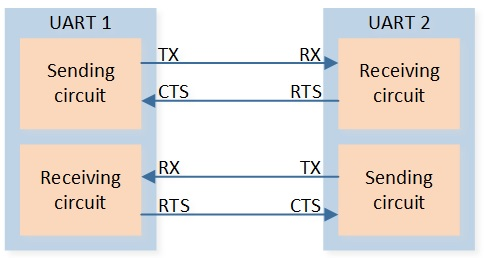
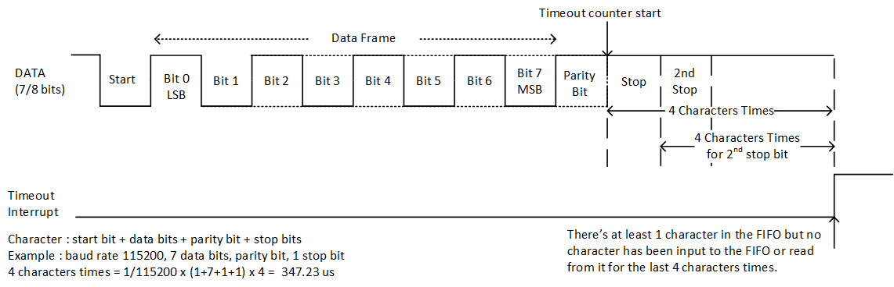
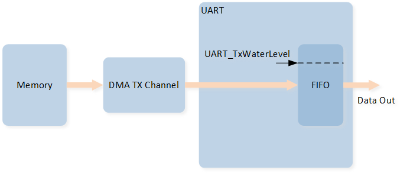
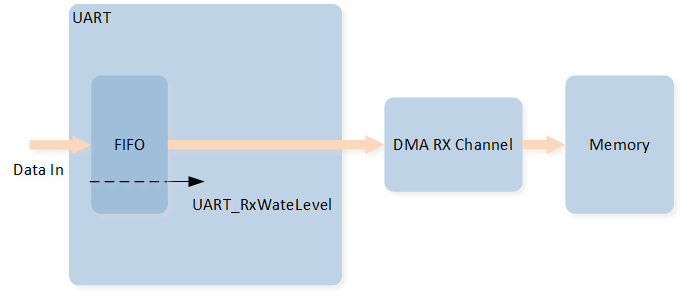

UART
Sample List
This chapter introduces the details of the UART sample. The RTL87x2G provides the following samples for the UART peripheral.
Functional Overview
UART provides a flexible method for full-duplex data exchange with external devices. The UART utilizes a fractional baud rate generator to provide a wide range of baud rate options. It supports half-duplex single-wire communication. UART can also be used with GDMA to achieve high-speed data communication.
Feature List
Support 1-bit or 2-bit stop bit.
Support 7-bit or 8-bit data format.
Support odd or even parity.
Support hardware flow control.
Programmable baud rate.
Support GDMA.
Support one-wire UART.
Note
UART0 is the HCI UART, and UART1 is the LOG UART. When using the UART peripherals, be careful to avoid resource conflicts.
Block Diagram
Here is the block diagram of UART. The MCU firmware implements functions such as UART TX/RX data handling. Data encapsulation and parsing are achieved through the UART peripheral, and hardware facilitates data interaction via TX/RX, enabling data communication.

System Block Diagram of UART
Data Format
The schematic diagram of the 7-bit data format is shown in the following figure.

Schematic Diagram of 7-bit Data Format
The schematic diagram of the 8-bit data format is shown in the following figure.

Schematic Diagram of 8-bit Data Format
Parity Check
Odd Parity
Odd parity means that the number of '1' in the data bits and check bit is odd. When the number of '1' in the data bits is odd, the check bit is '0'; otherwise, it is '1'.
Even Parity
Even parity means that the number of '1' in the data bits and check bit is even. When the number of '1' in the data bits is even, the check bit is '0'; otherwise, it is '1'.
Hardware Flow Control
The schematic diagram of hardware flow control is shown in the following figure.
{kind=link}

Schematic Diagram of Hardware Flow Control
RTS Flow Control
When the UART receiver is ready to accept new data, RTS becomes valid, and the low level is valid. When the number of data in the RX FIFO reaches the set RX trigger level, RTS becomes invalid (high level is invalid), thereby indicating that it is desired to stop data transmission at the end of the current frame.
CTS Flow Control
The transmitter checks the CTS before sending the next frame. If CTS is valid (low level is valid), the next data is sent; otherwise, the next frame data is not sent. If the CTS becomes invalid (high level is invalid) during transmission, the transmission is stopped after the current transmission is completed.
Baud Rate
Set the baud rate by configuring the variables UART_InitTypeDef::UART_Div, UART_InitTypeDef::UART_Ovsr, and UART_InitTypeDef::UART_OvsrAdj.
For specific baud rate parameter settings, please refer to the comments in UART_SetBaudRate().
UART Interrupt
The UART interrupt configuration and interrupt check are mainly divided into two parts: one part can directly check the corresponding interrupt flag bit to determine whether the corresponding interrupt has occurred, and the other part requires calling UART_GetIID() to read the interrupt ID information for determination.
The relevant introduction to UART interrupts is shown in the table below:
Interrupt |
Trigger Condition |
Interrupt ID |
Flag Status |
How to Clear |
|---|---|---|---|---|
RX FIFO is not empty or RX FIFO level reached RX FIFO threshold. |
|
Reading UART RX FIFO until RX FIFO is empty or is below threshold. |
||
There's at least 1 UART data in the RX FIFO but no character has been input to the RX FIFO or read from it for the last time of 4 characters. |
|
Reading UART RX FIFO until RX FIFO is empty. |
||
An overrun error will occur only after the FIFO is full and the next character has been completely received in the shift register. |
|
Read REG_LSR register. (Call API |
||
When the data is read out from RX FIFO, Hardware will check data parity bit. If the parity check is failed, it will trigger Receiver Line Status interrupt. |
||||
When the data is read out from RX FIFO, Hardware will check data frame. If the frame check is failed, it will trigger Receiver Line Status interrupt. |
||||
Whenever the received data input is held in the Spacing (logic 0) state for a longer than a full word transmission time, it will trigger Receiver Line Status interrupt. |
||||
TX FIFO empty. |
|
Writing to the TX FIFO Transmitter Holding Register (UART_RBR_THR) or reading REG_IIR (Call API |
||
TX shift register empty and TX FIFO empty, indicates the TX waveform finish. |
- |
Read REG_TXDONE_INT register. (Call API |
||
TX FIFO level is less than or equal to TX FIFO threshold. |
- |
Writing to the TX FIFO Transmitter Holding Register (UART_RBR_THR) until TX FIFO level is above TX FIFO threshold. |
||
No data is received in RX idle timeout time after the RX FIFO is empty (data is received before). |
- |
Writing '1' to REG_RX_TIMEOUT_STS. (Call API |
Additional Notes on UART Interrupts
Interrupt ID is obtained through
UART_GetIID(). Each interrupt ID has a corresponding priority. Lower priority interrupt IDs cannot be read until higher priority interrupts are cleared. Priority ranking: 1 > 2 > 3 > 4.Since some interrupt flag bits will be cleared after reading the register, it is recommended to save the value when obtaining the interrupt ID.
Comparison of TX interrupts:
UART_INT_TX_FIFO_EMPTY: This interrupt is triggered when the TX FIFO is empty.UART_INT_TX_THD: This interrupt is triggered when the amount of data in the TX FIFO is less than or equal to the set TX threshold level.UART_INT_TX_DONE: This indicates that the TX FIFO is empty and the TX Shift Register is also empty, meaning the UART TX waveform output is complete.
Comparison of RX Interrupts
Receiver Timeout Interrupt
Receiver Timeout Interrupt is configured through the UART_INT_RD_AVA interrupt, and the interrupt ID UART_INT_ID_RX_DATA_TIMEOUT is checked.
There should be at least one UART data in the RX FIFO, but if no data is written into the RX FIFO and no data is read out within the time of 4 Characters, this interrupt will be triggered.
Character = start bit + data bits + parity bit + stop bits.
For example, if the baud rate is set to 115200, with 7 data bits, a parity bit, and 1 stop bit, then the 4 Characters time = 1/112500 * (1+7+1+1) * 4 = 347.23us.

UART Receiver Timeout Interrupt Diagram
RX IDLE Timeout Interrupt
The RX IDLE Timeout Interrupt is configured using the UART_INT_RX_IDLE interrupt, and the UART_FLAG_RX_IDLE flag is checked to determine its status.
If the RX FIFO is empty (after previously receiving data) and no data is received within the RX idle timeout period, this interrupt will be triggered. The idle timeout period is set using UART_InitTypeDef::UART_IdleTime.

RX IDLE Timeout Interrupt Diagram
UART GDMA
UART GDMA TX
During the UART serial transmission process, when the amount of data in the TX FIFO is less than or equal to the value set in the initialization UART_InitTypeDef::UART_TxWaterLevel, a GDMA burst transfer will be triggered.
One GDMA burst transaction will write GDMA_InitTypeDef::GDMA_DestinationMsize pieces of data into the UART TX FIFO.

UART GDMA TX Diagram
UART GDMA RX
During the UART serial transmission process, when the amount of data in the RX FIFO is greater than or equal to the value set in the initialization for UART_InitTypeDef::UART_RxWaterLevel, a GDMA burst transfer will be triggered.
One GDMA burst transaction will receive GDMA_InitTypeDef::GDMA_SourceMsize pieces of data from the UART RX FIFO.

UART GDMA RX Diagram